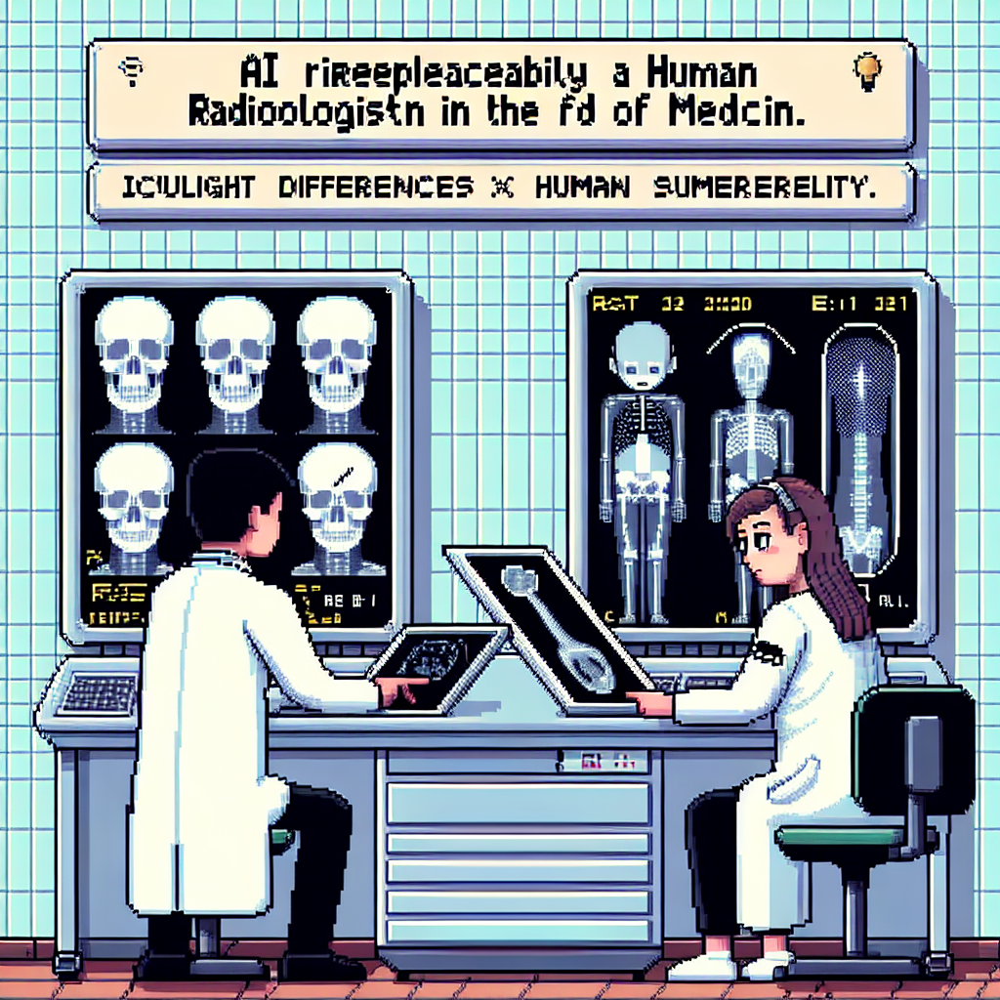

Why AI will never replace the radiologist
**Why AI Will Never Replace the Radiologist**
In recent years, we’ve witnessed an unprecedented surge in the integration of artificial intelligence (AI) and machine learning technologies across various sectors. In the medical field, particularly radiology, the potential for AI to enhance diagnostic capabilities has sparked both excitement and concern. While AI can undoubtedly assist radiologists by streamlining workflows and improving efficiency, I firmly believe that it will never replace the critical role that human radiologists play in patient care. In this post, I will discuss several key reasons why the radiologist's expertise remains irreplaceable, despite the advancements in AI.
### 1. The Human Touch in Patient Care
One of the most significant aspects of a radiologist's role is their interaction with patients and other healthcare professionals. Radiologists do not merely interpret images; they also provide context, explain findings, and contribute to treatment decisions. The ability to empathize and communicate effectively with patients, addressing their concerns and fears, is something that AI cannot replicate. Human radiologists are essential in ensuring that patients feel understood and cared for, fostering a trusting relationship that is vital for effective healthcare.
### 2. Complex Decision-Making
Radiology is not just about recognizing patterns in images; it often involves complex decision-making based on a multitude of factors, including patient history, clinical context, and potential differential diagnoses. While AI algorithms can be trained to identify certain conditions, they lack the nuanced understanding that radiologists bring to the table. Radiologists synthesize a wide range of information to make informed decisions, considering the patient's overall health, previous imaging, and other diagnostic tests. This level of critical thinking and holistic assessment is something that AI cannot achieve.
### 3. Handling Ambiguities and Uncertainty
Medical imaging often presents ambiguous cases where the findings may not be clear-cut. Situations may arise where additional context or further investigation is required before reaching a conclusion. Human radiologists are trained to handle uncertainties, weighing the likelihood of various conditions and considering the implications of their diagnoses. AI, on the other hand, may struggle with uncertainty and can produce misleading results if the data it has been trained on is insufficient or skewed.
### 4. Continuous Learning and Adaptation
The field of radiology is constantly evolving, with new imaging techniques, technologies, and medical knowledge emerging regularly. Radiologists engage in continuous learning, adapting their practices based on the latest research and clinical guidelines. While AI can be updated with new data, it does not possess the ability to critically evaluate and integrate new information in the same way that a human expert can. Radiologists bring years of experience and intuition to their practice, allowing them to adapt to new challenges effectively.
### 5. Ethical and Legal Considerations
The integration of AI in healthcare raises significant ethical and legal questions. Who is responsible when an AI system misdiagnoses a condition? Radiologists are trained to navigate these complexities, ensuring that patient care is prioritized and that ethical standards are upheld. The accountability that comes with human expertise cannot be mirrored by an AI system, making human oversight essential in the diagnostic process.
### Conclusion
While AI will undoubtedly continue to play an increasingly important role in radiology, enhancing the efficiency of image analysis and supporting radiologists in their decision-making processes, it will never replace the invaluable human elements of empathy, critical thinking, and ethical responsibility that radiologists bring to patient care. The synergy between AI and human expertise is the future of radiology, where both can work together to improve outcomes and enhance the quality of healthcare. As we embrace the advancements in technology, let us not forget the irreplaceable role of the human touch in medicine.